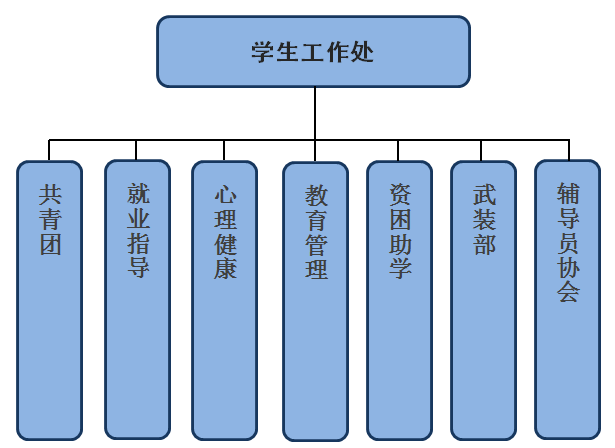

<extend name="Public:listbase"/>
<block name="content">
    <h3>|&nbsp;&nbsp;&nbsp;{$page.title}</h3>

    <div class="news">
        <!--<div class="title">-->
        <!--{$page.title}-->
        <!--</div>-->
        <div class="content">
      
<map name="Map" id="Map"><area shape="rect" coords="25,169,71,428" href="http://league.hitwh.edu.cn/"target="_blank" />
<area shape="rect" coords="115,175,166,411" href="http://job.hitwh.edu.cn/" target="_blank" />
<area shape="rect" coords="199,173,252,428" href="http://psy.hitwh.edu.cn/" target="_blank" />
</map></div>
    </div>
</block>

<block name="left">
    <div class="con_left_top">{$current.name}</div>
    <div class="con_left_list">
        <ul>
            <if condition="empty($sidec)">
                <li><a href="">
                    {$sidef.name}
                </a></li>
            </if>
            <volist name="sidec" id="vo">
                <li>
                    <if condition="$vo['typeid'] eq 2">
                        <a href="{$vo.href}" target="_blank">{$vo.name}</a>
                        <else/>
                        <a href="{:U($vo['href'])}">{$vo.name}</a>
                    </if>
                </li>
            </volist>
        </ul>
    </div>
</block>

<block name="footer">
    <include file="Public:showfooter"/>
</block>